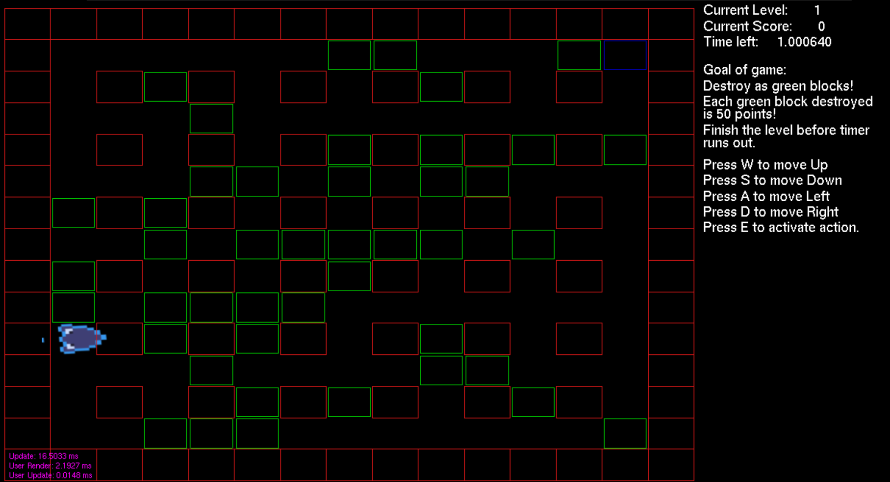

Project summerisation: The project combines C++ and a graphics API to create a game where players control a drill to destroy walls for points within a time limit. Levels become progressively harder as they have less time per level.
Dynamic Map Generation: Dynamic level creation system using a 2D array and seeded randomness to generate unique layouts each level, ensuring replayability.
Porject demonstrations: The implementation demonstrates effective use of programming logic, blending randomness with structured design, and offers potential for further refinements to enhance level diversity.
This project was my entry for the Ubisoft Next Competition, where I developed a Bomberman-style game using C++ and a basic graphical GUI. The game features a 15x15 grid where players control a fast-moving drill, aiming to destroy green destructible boxes to earn points before the timer runs out. Each level generates a unique layout, and as players progress, the starting timer decreases, challenging them to act more quickly.

Transitioning my Java and C# knowledge to C++ presented challenges, especially since I had no prior experience with Ubisoft's GUI system. Early on, I focused on learning the GUI framework, creating a level generator, and debugging interactions between the 2D array-based system and the graphical interface to ensure smooth gameplay. This project was a proof of concept that I could not only work with a GUI system but also transition between languages and use previous programming knowledge to solve problems.
A highlight of the project is the level creation method, which uses a 2D array to manage grid positions, assigning breakable walls randomly while maintaining variety through seeded randomization. The system ensures each level feels fresh and unpredictable. I did this by creating a struct that contained the x, and y positions and a string that determined the type of the wall. I then created a 2d Array with the struct as its data type and made it size 15X15. I proceeded to set the border of the map with a wall named � Unbreakable wall� and at certain positions. I would then loop through the entire 2d Array and in the areas that had an empty spot I had a random number generator that would create a value between 0 and 32767. If the value was greater than a third of 32767 I would create a breakable wall. The percentage could easily be changed allowing for more or less breakable walls to be created and therefore change how many points the player could earn per level.
Possible Improvements:
If I were to revisit the project, I�d slow down the player�s movement for better control and introduce new mechanics like a dash ability to enhance gameplay depth. These changes would reduce repetition and encourage more strategic decision-making as players progress.